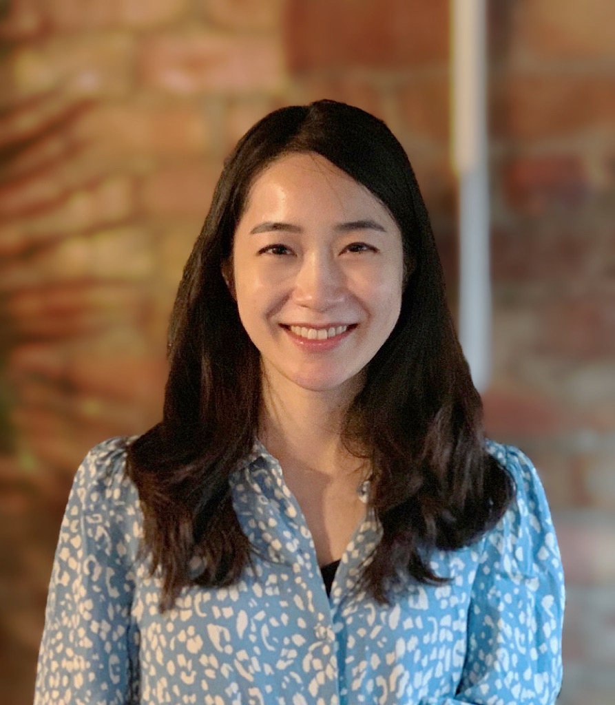

I am a PhD candidate in Linguistics at the University of Chicago. Currently I am at NYU as a visiting academic at the Center for Data Science.
I'll be a Franke Institute Doctoral Fellow in AY 2023-24.
My research focuses on language processing and understanding in humans and machines especially in discourse and dialogue situations.
I work closely with Ming Xiang and Allyson Ettinger.
For my dissertation work, I explore the memory encoding and retrieval of discourse structure information in real-time human language comprehension (supported by NSF Doctoral Dissertation Research Improvement Grant (BCS-2214437); Co-PI: Ming Xiang). I use different structures with appositive and restrictive relative clauses and utilize behavioral experiments and computational methods.
Affiliation: UChicago Linguistics | The Language Processing Lab | Computational Linguistics Lab
Contact: sangheekim [at] uchicago [dot] edu